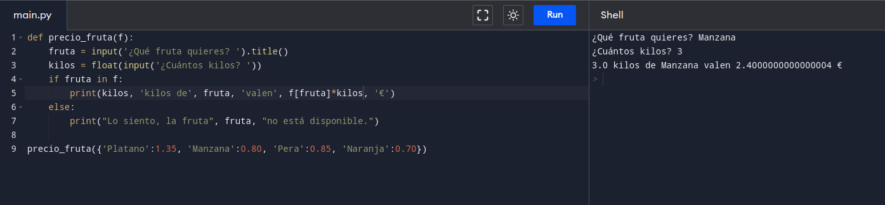

Escribir un programa que guarde en un diccionario los precios de las frutas de la tabla, pregunte al usuario por una fruta, un número de kilos y muestre por pantalla el precio de ese número de kilos de fruta. Si la fruta no está en el diccionario debe mostrar un mensaje informando de ello. Fruta Precio Plátano 1.35 Manzana 0.80 Pera 0.85 Naranja 0.70
def precio_fruta(f):
fruta = input('¿Qué fruta quieres? ').title()
kilos = float(input('¿Cuántos kilos? '))
if fruta in f:
print(kilos, 'kilos de', fruta, 'valen', f[fruta]*kilos, '€')
else:
print("La fruta", fruta, "no existe.")
precio_fruta({'Platano':1.35, 'Manzana':0.80, 'Pera':0.85, 'Naranja':0.70})

back